Publicité & réseaux sociaux · SoChic Paris
Campagne réseaux sociaux : sublimer le luxe de seconde main au cœur de Paris
Une campagne publicitaire vidéo et photo pensée pour les réseaux sociaux afin d'incarner l'élégance parisienne et valoriser des pièces de luxe de seconde main.
- Client
- SoChic Paris
- Secteur
- Mode & luxe de seconde main
- Livrables
- 2 films verticaux (Lifestyle Outdoor & Mode Indoor) + shooting photo éditorial (12 visuels)
- Année · Durée
- 2025 · Livraison selon les deadlines client
Résultats obtenus
- +38%de taux d'engagement sur Instagram & Reels
- 2 filmspublicitaires verticaux (Outdoor & Indoor)
- +26%de clics vers le catalogue en ligne
- 12+visuels éditoriaux déclinés pour les réseaux
01 — Contexte
Le contexte & les enjeux
SoChic Paris est une entreprise spécialisée dans la revente de vêtements et d'accessoires de luxe de seconde main. Pour accélérer sa visibilité sur les réseaux sociaux et séduire une clientèle exigeante, la marque souhaitait une campagne publicitaire capable d'associer les codes des grandes maisons de couture à la fraîcheur des formats courts.
02 — Attentes
Ce que le client attendait
- Créer des contenus vidéo et photo à forte désirabilité pour les réseaux sociaux (Reels, TikTok, campagnes sponsorisées)
- Mettre en valeur l'authenticité et l'état irréprochable des pièces de seconde main (sacs iconiques, foulards en soie, bijoux, prêt-à-porter)
- Ancrer l'ADN de la marque dans un univers résolument parisien et raffiné
- Varier les ambiances entre extérieur lifestyle et intérieur feutré pour multiplier les points de contact
03 — Contraintes
Les contraintes du projet
- Enchaîner plusieurs décors parisiens (terrasse de café, bouche de métro Art nouveau, architecture haussmannienne, intérieur) sur un temps de tournage maîtrisé
- Sublimer les matières nobles (cuir grainé Épi, toile monogramme, soie, métal précieux) malgré les variations de lumière
- Concevoir un cadrage natif pensé dès la prise de vue pour les formats verticaux des réseaux sociaux
- Produire simultanément deux films publicitaires distincts et une série photographique cohérente
04 — Propositions
Les pistes que nous avons proposées
-
Un catalogue studio sur fond neutre
Présenter les pièces une par une en studio sur fond uni : lisible mais trop froid pour capter l'attention dans un fil social media.
-
Un format micro-trottoir ou haul face caméra
Un format parlé très spontané, mais moins aligné avec le positionnement haut de gamme et l'élégance attendue dans l'univers du luxe.
-
Un diptyque éditorial : Lifestyle Parisien & Mode Indoor Piste retenue
Deux films complémentaires : une déambulation solaire dans les lieux iconiques de Paris et une séquence indoor feutrée centrée sur l'attitude, les détails et les accessoires.
05 — Solution
La solution retenue
Nous avons retenu le diptyque éditorial afin d'offrir à SoChic Paris une campagne complète : le film « Lifestyle » capte immédiatement l'attention grâce aux décors parisiens (terrasse, voiture de collection, bouche de métro Metropolitain), tandis que le film « Mode Indoor » installe une atmosphère plus intimiste et couture. La série photo prolonge la campagne sur le feed et les annonces publicitaires.
06 — Production
Tournage & montage
Tournage
Tournage en extérieur dans Paris et en intérieur avec mannequin, stylisme soigné, caméras et optiques professionnelles à grande ouverture.
Montage
Deux montages rythmés calibrés pour la rétention sur les réseaux sociaux, étalonnage éditorial respectant la fidélité des couleurs des pièces de luxe.
Équipe
Réalisateur-cadreur, photographe, direction artistique et mannequin.
07 — Résultat
Le résultat
01 · Film Lifestyle Outdoor — Paris
02 · Film Mode Indoor — Silhouettes & accessoires
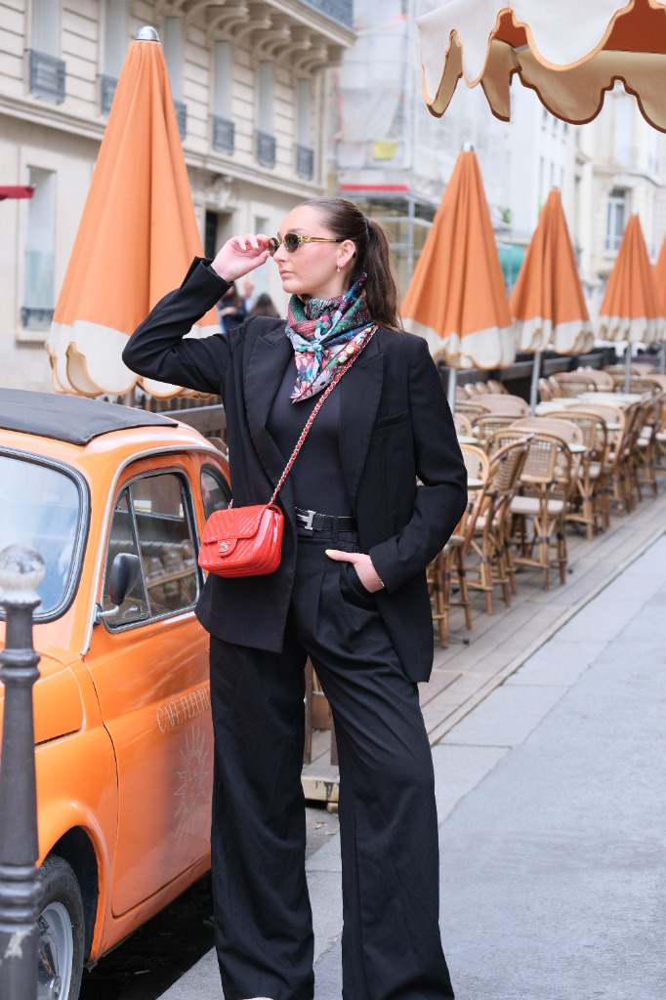
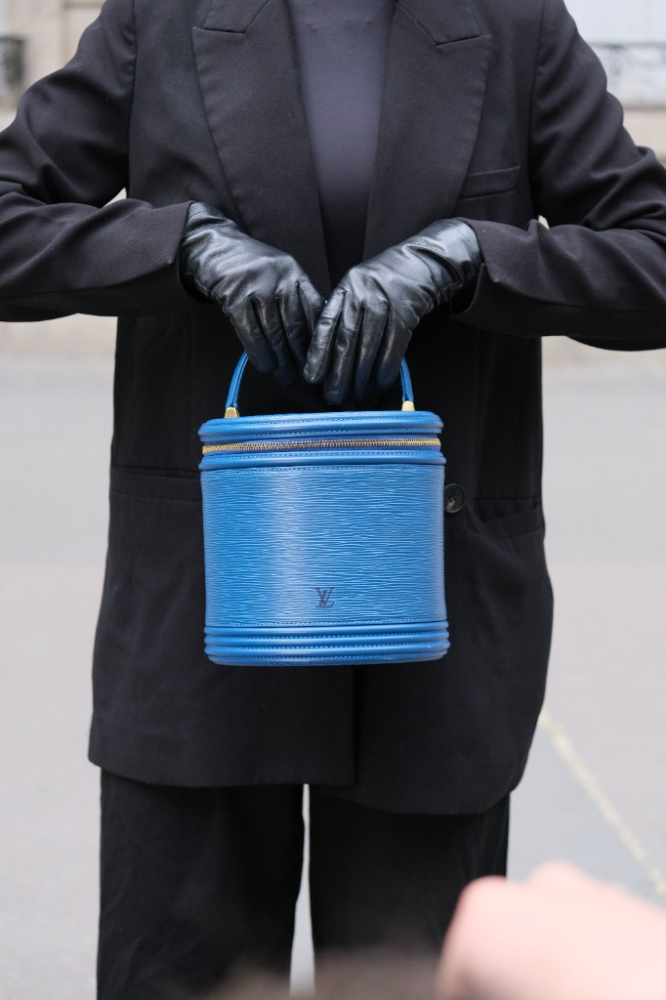
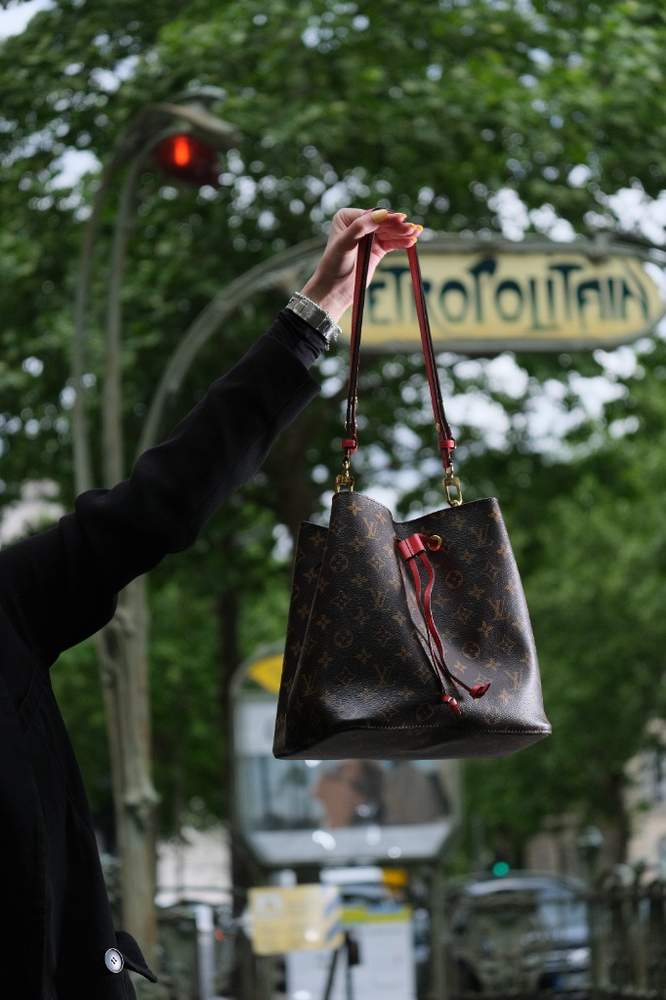
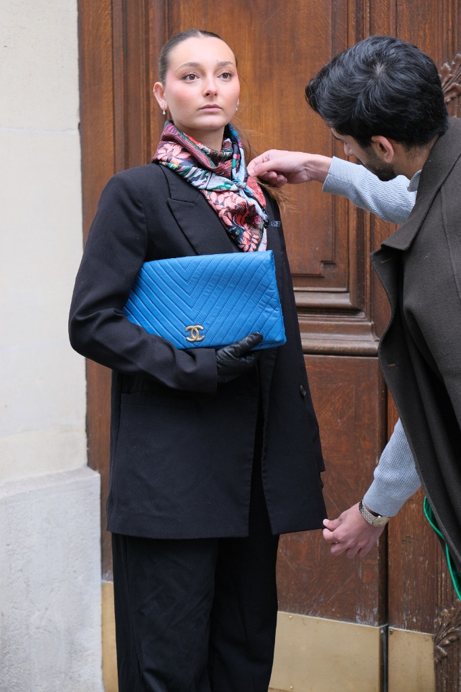
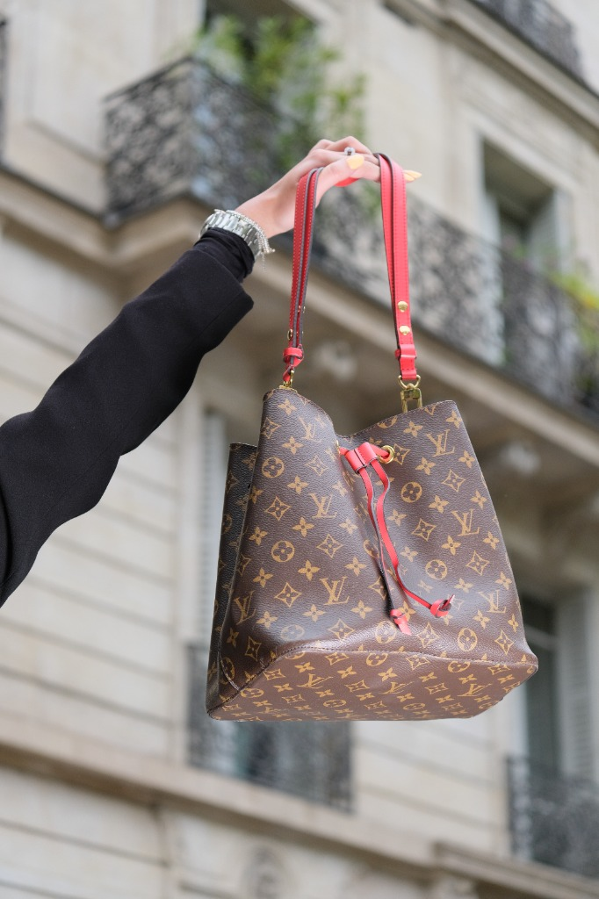
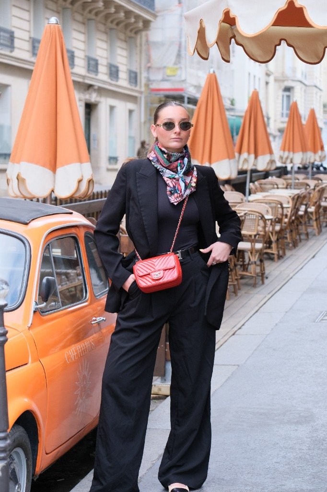
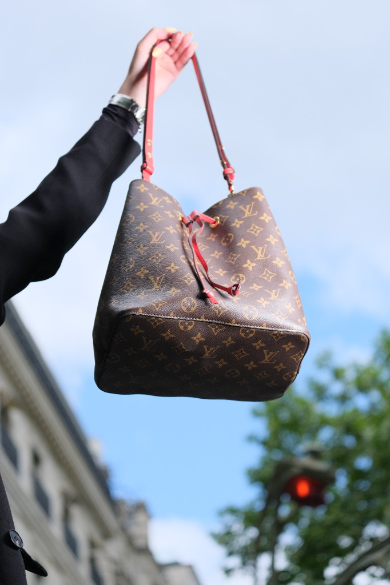
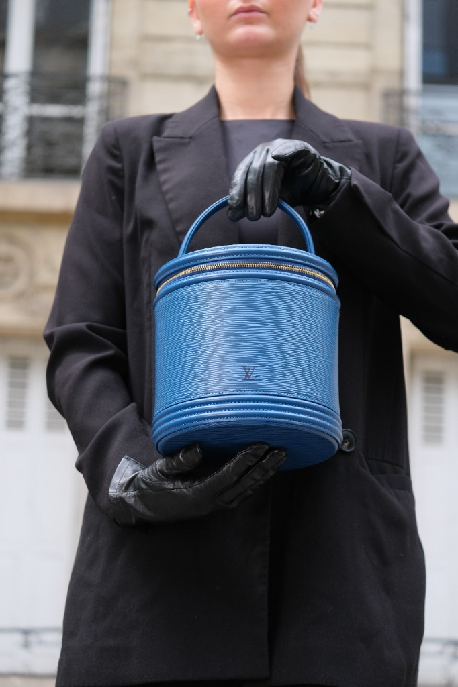
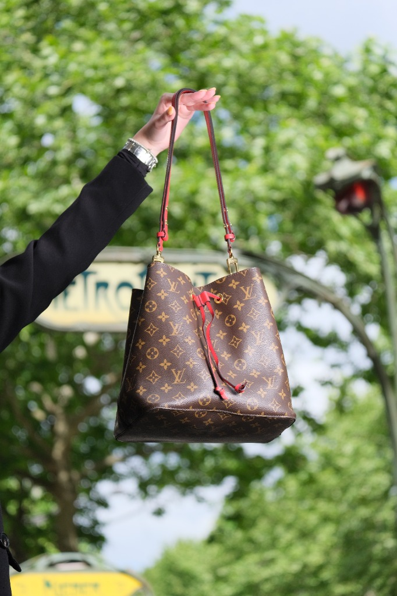
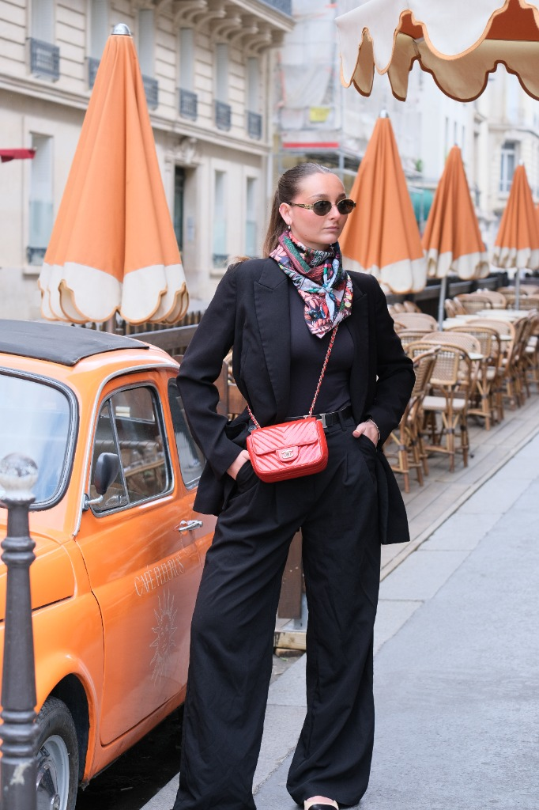
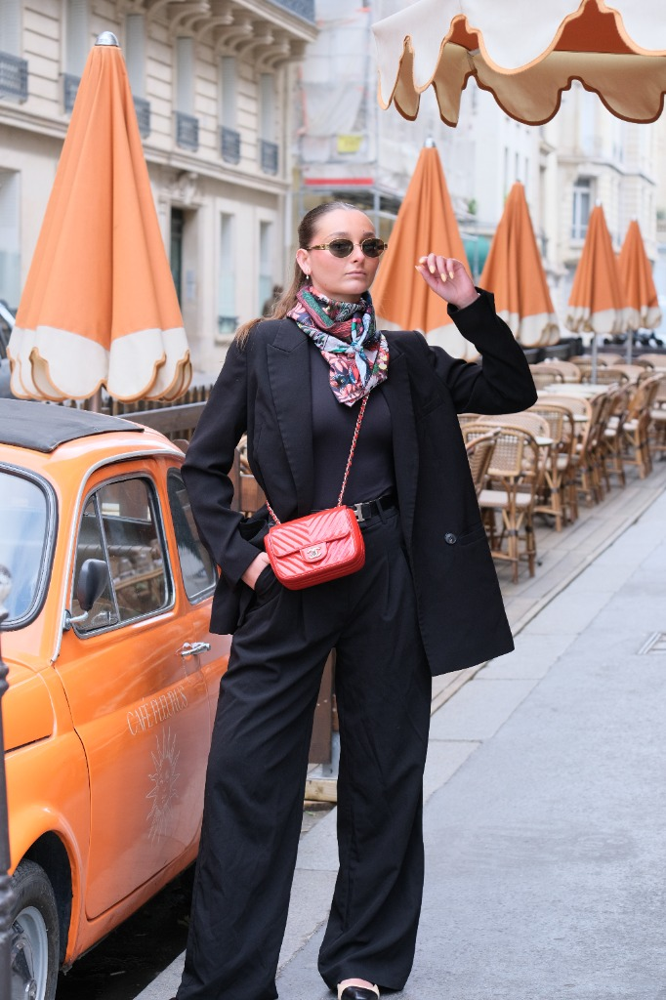
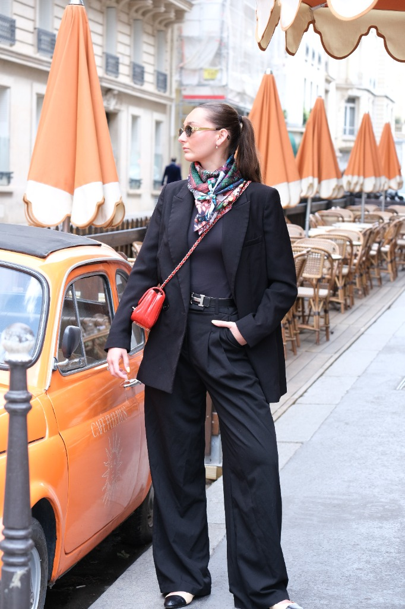
La campagne donne immédiatement une dimension couture à nos pièces de seconde main. Les deux ambiances vidéo et la série photo nous ont permis d'alimenter nos réseaux avec une vraie cohérence visuelle.

Et si le prochain cas client, c'était le vôtre ?
Parlez-nous de vos enjeux. Nous revenons vers vous avec des idées concrètes, pas avec un devis générique.